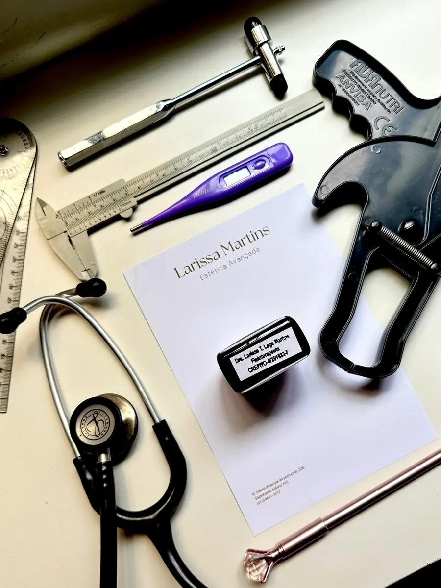
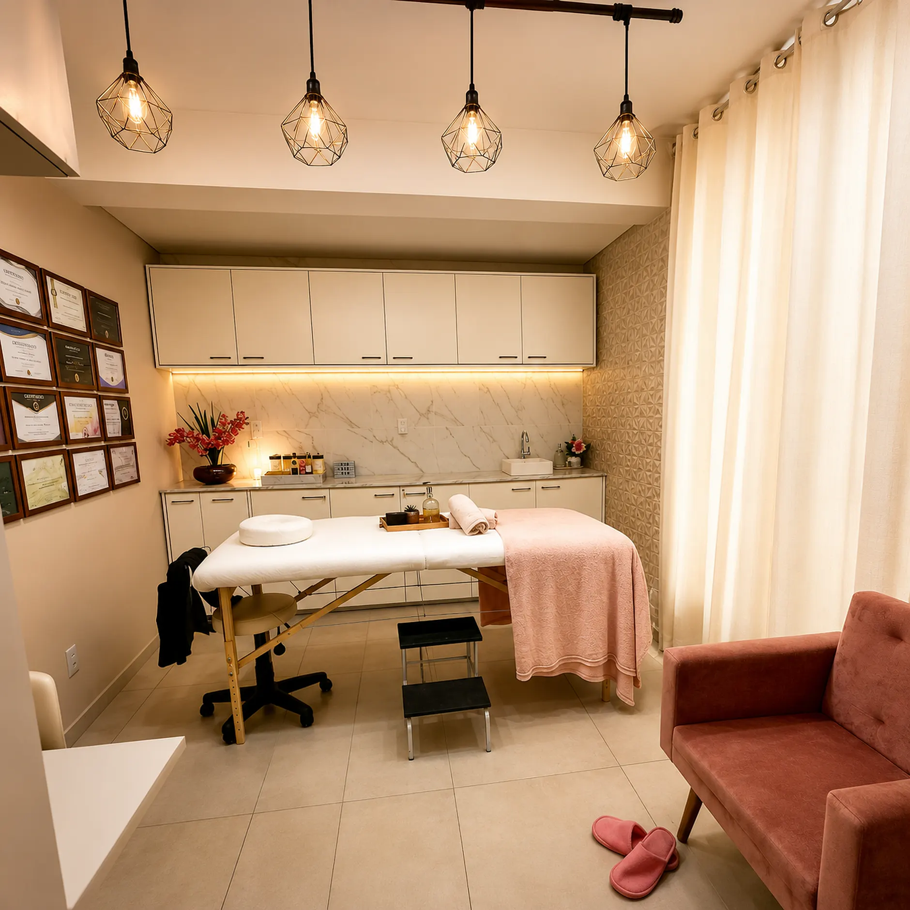
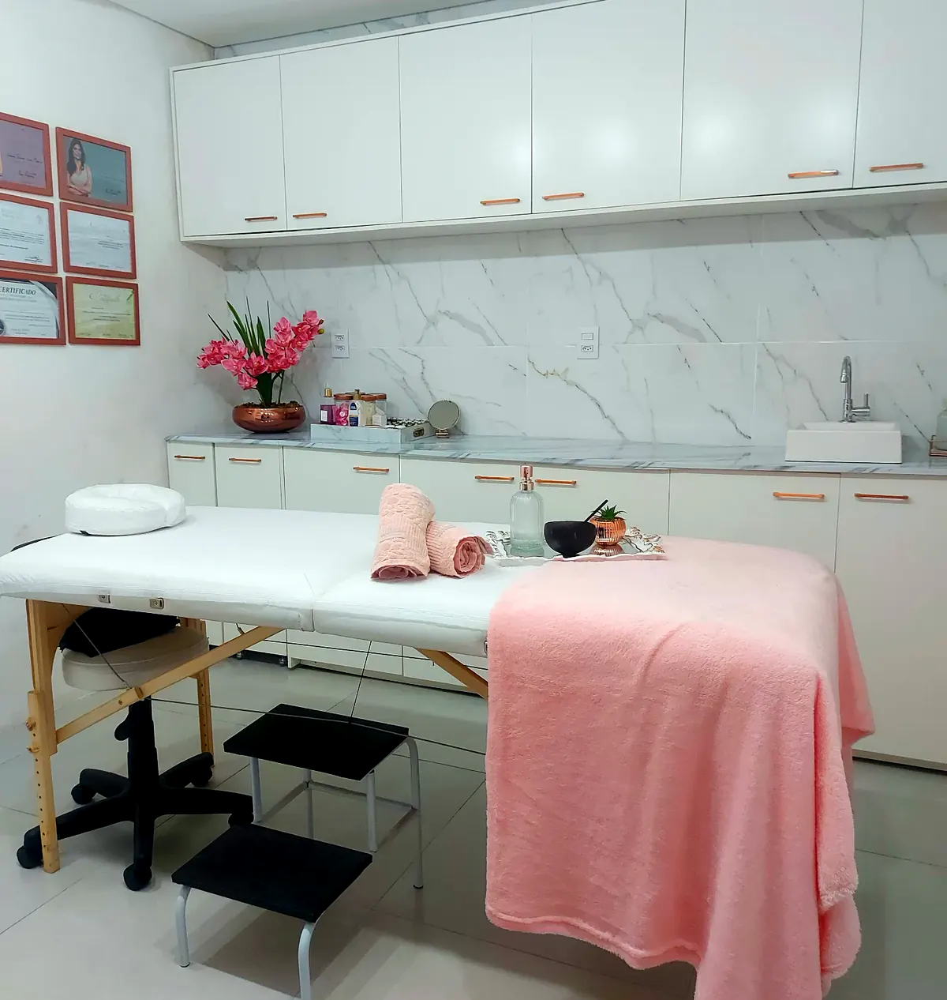
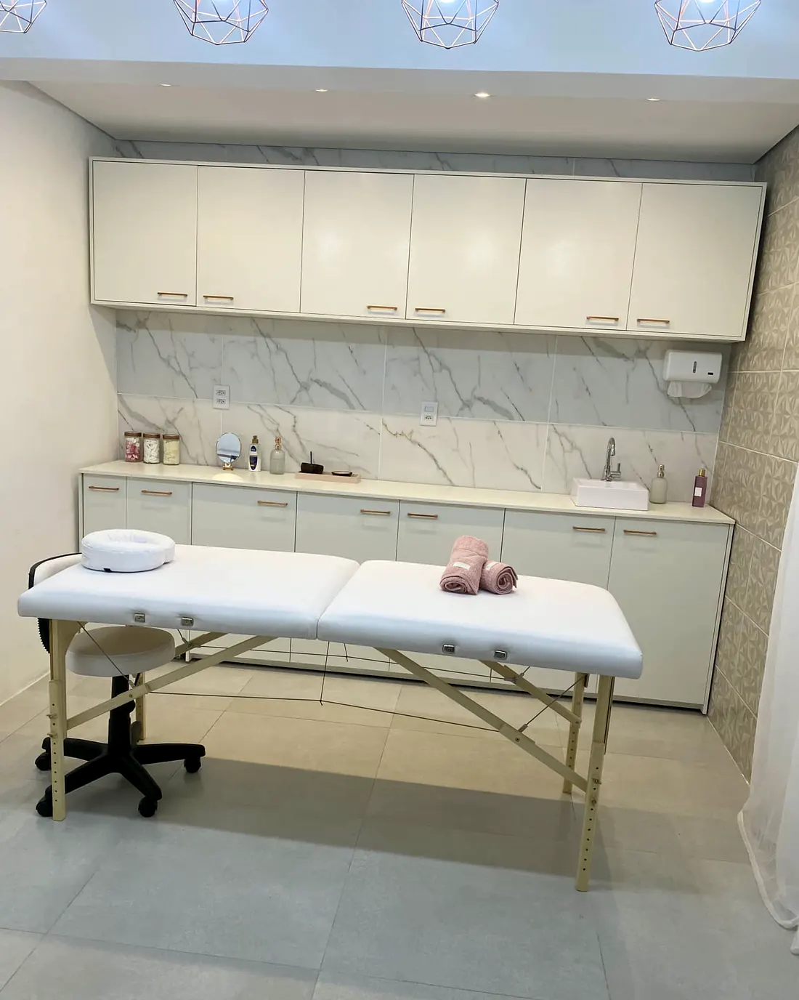
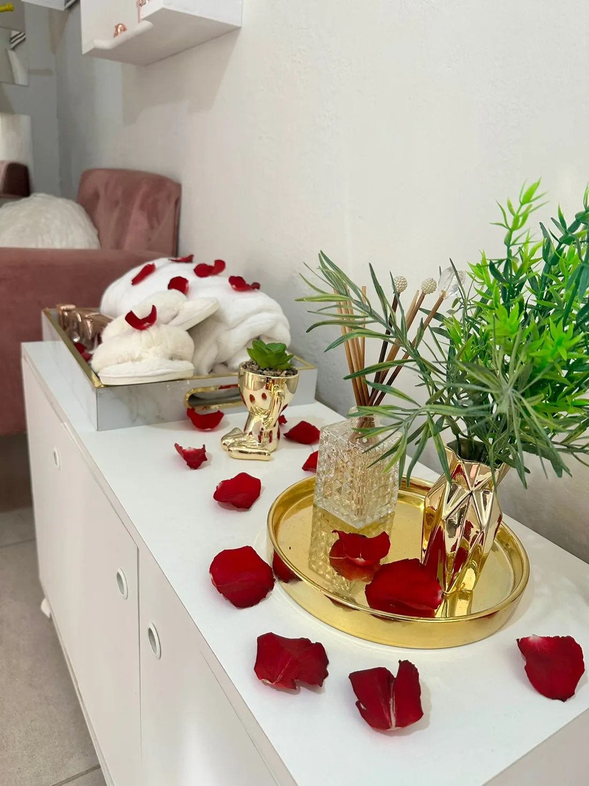

Consulta estética
A avaliação vem antes de tudo. É onde se olha a pele, a estrutura do rosto e o que você quer mudar — sem compromisso de fechar nada na hora.
Estética avançada com Larissa Martins, fisioterapeuta pós-graduada em dermatofuncional. Rosto, pele e corpo, com avaliação antes de qualquer procedimento.
Ninguém sai daqui com um pacote pronto. O primeiro passo é entender o que o seu rosto e o seu corpo precisam — e é isso que define o resto.
A avaliação vem antes de tudo. É onde se olha a pele, a estrutura do rosto e o que você quer mudar — sem compromisso de fechar nada na hora.
A partir da avaliação, você entende o que precisa ser feito, em quantas etapas e em quanto tempo. Um plano do seu caso, não um cardápio.
Cada etapa é feita com hora marcada e acompanhada de perto, com as orientações do pós-procedimento explicadas antes de você ir embora.
Rosto, pele e corpo no mesmo lugar. Abaixo estão agrupados pelo que você quer mudar — o procedimento certo sai da avaliação.

É super importante antes de qualquer tratamento fazer uma consulta, nela iremos analisar tudo e planejar o melhor tratamento pra você.
Trabalhamos com técnica de reestruturação facial que vai te deixar linda de forma natural.
Tratamento para amenizar a força muscular, prevenindo rugas.
Tratamento para melhorar a qualidade de pele.
Técnica para hidratação dos lábios. Ajuda a hidratar profundamente, proporcionando lábios lindos e hidratados.
Temos na clínica três tipos de limpeza de pele: Ouro, Prata e Bronze.
Temos tratamentos antioxidantes e clareadores.
Tratamento para te ajudar a alcançar a sua melhor versão.
Feita em etapas, com o plano saindo da consulta. O número de sessões depende do seu caso.
Temos tratamentos para acabar de vez com aquela gordurinha que tanto te incomoda.
Drenagem linfática e massagem modeladora pelo método Renata França.
Feita no corpo todo, em ambiente aconchegante à luz de velas, com som ambiente e aroma relaxante.
Inclui a massagem relaxante com óleos essenciais, aromaterapia, cromoterapia e musicoterapia, mais hidratação facial.
Tudo o que o spa day tem, mais espumante, chocolates, flores e um cartão personalizado.
Fisioterapeuta pós-graduada em dermatofuncional, apaixonada por transformar. Mineira — e quando for ser atendida por mim já espere muita simpatia, atenção e um sotaque que todo mundo ama.
“Meu lema de vida é: não deixe pra cuidar amanhã do que pode cuidar hoje.”
Sala própria, reservada e silenciosa, em Itabira. E, na parede, os certificados de cada curso que sustenta o que é feito aqui dentro.




“Fiz limpeza de pele pra tirar os cravos que tanto me incomodavam e superou minhas expectativas. Minha pele ficou incrível, super macia, clara, nunca tinha ficado assim tão boa. Saí de lá encantado.”
“A Larissa foi quem me atendeu no WhatsApp e foi atenciosa aos detalhes do início ao fim. Eu buscava um Spa day como uma surpresa de aniversário e ela fez uma entrega excepcional. Recomendo mil vezes.”
“Nunca tinha feito uma limpeza de pele tão boa, não senti dor. Saí com a pele super clara, linda e macia. Simplesmente amei.”
“A clínica é super fofa, cheirosa e aconchegante. A profissional que me atendeu é super simpática, atenciosa e entrega muito além do que eu esperava. Virei cliente fiel.”
“Fui muito bem recebida e os procedimentos são excelentes. Minha pele ficou renovada e as massagens são maravilhosas. Simplesmente amei!”
“Me ajudou bastante na autoestima e é uma ótima profissional.”
“É super atenciosa, explica tudo direitinho, ainda passa todas as orientações do pós-procedimento e acompanha tudo.”